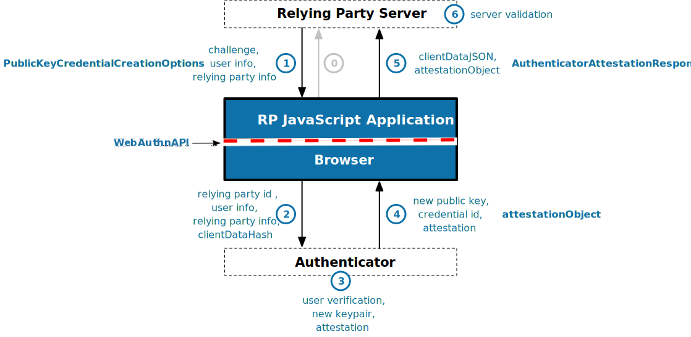

WebAuthn
Le futur de l'authentification sur le web ?
WebAuthn : Le futur de l'authentification sur le web ?
- La sécurité de l'authentification, un enjeu primordial
- Les enjeux de l'authentification
- Les mots de passe et leurs limites
- Le début de l'Authentification à 2 facteurs et ses limites
- WebAuthn...
- Qu'est-ce que c'est ?
- Comment ça marche ?
- Quelle compatibilité ?
- Live Demo 😁
La sécurité de l'authentification
Un enjeu primordial
Les enjeux de l'authentification
- Éviter l'usurpation d'identité
- Assurer la sécurité des ressources numériques
Les mots de passe...
- Solution la plus répandue pour sécuriser une identité
... et leurs limites
- Le principal problème : le facteur humain
L'Authentification à 2 facteurs
- Utiliser au moins deux des quatre facteurs d'authentification :
- Ce que l'on connaît
- Ce que l'on possède
- Ce que l'on est
- Ce que l'on sait faire
L'Authentification à 2 facteurs
- Par SMS, téléphone ou e-mail
- Par équipement dédié
- Par une application Smartphone
Mais on peut faire mieux...
WebAuthn
L'authentification à deux facteurs native
Qu'est-ce que c'est ?
- Une spécification écrite par le W3C et l'Alliance FIDO
- Une API navigateur native complète pour prendre en charge un second facteur d'authentification
- Marche avec des clés physiques externes, mais aussi avec les ordinateurs ou smartphones directement
- Peut même constituer un mode d'authentification unique
Et pour l'utilisateur ?
-
L'utilisateur peut choisir plusieurs clés de sécurité :
- Son smartphone, via un QRCode
- Une clé matérielle de sécurité
- Son ordinateur, directement, via Windows Hello ou touchID
Comment ça marche ?
- Une paire de clés est générée chez le client
- La clé publique est envoyée au serveur
- Le serveur envoie un challenge au client
- Le client utilise sa clé privée pour résoudre le challenge et s'authentifier
- Aucune clé privée n'est envoyée au serveur
Avec des diagrammes, c'est mieux

Avec des diagrammes, c'est mieux

Quelques particularités
- Ça ne marche qu'en HTTPS ou sur localhost
- Possibilité pour le serveur de restreindre les méthodes d'authentification
Et dans le code ?
On a une API navigateur native
Et dans le code ?
On a une API navigateur native
Et dans le code ?
Évidemment, on a plein de bibliothèques simplifiant l'implémentation côté serveur, quel que soit le langage.
Et la compatibilité ?
- Tous les navigateurs « Evergreen »
- Chrome 67+, Edge 18+, Safari 13+, Opera 54+
- Support avec quelques limites sur Firefox
- Sur mobile, Chrome 107+, Safari 14.5+
- Évidemment, pas pris en charge par IE
Live demo !
Si vous voulez jouer un peu avec après la démo : webauthn.io
Merci de m'avoir écouté !
Des questions ?
Vous pouvez retrouver la présentation sur https://yanbuatois.github.io/worksession-2022-authn/